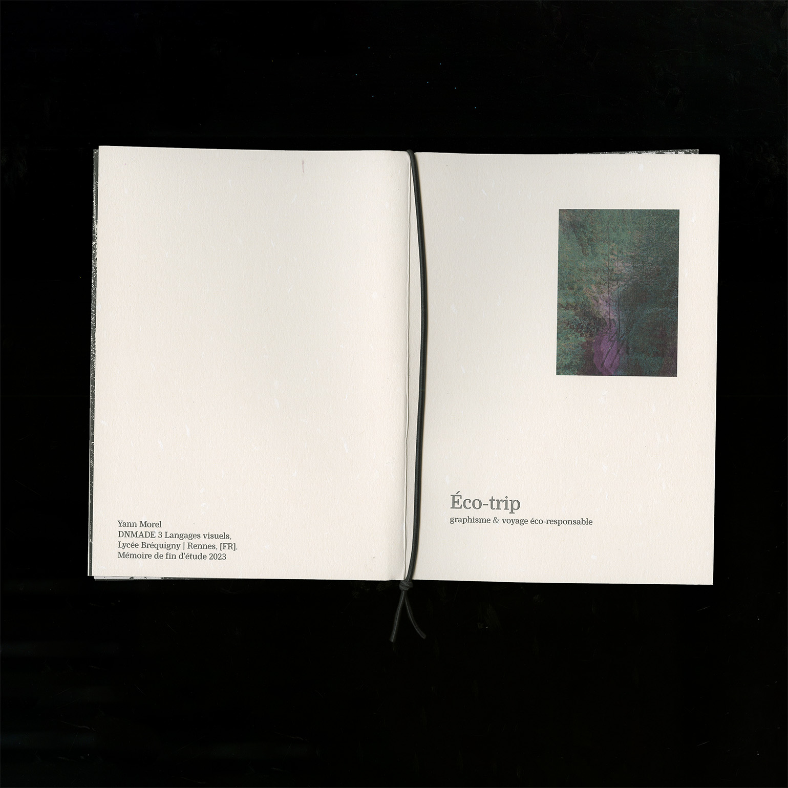
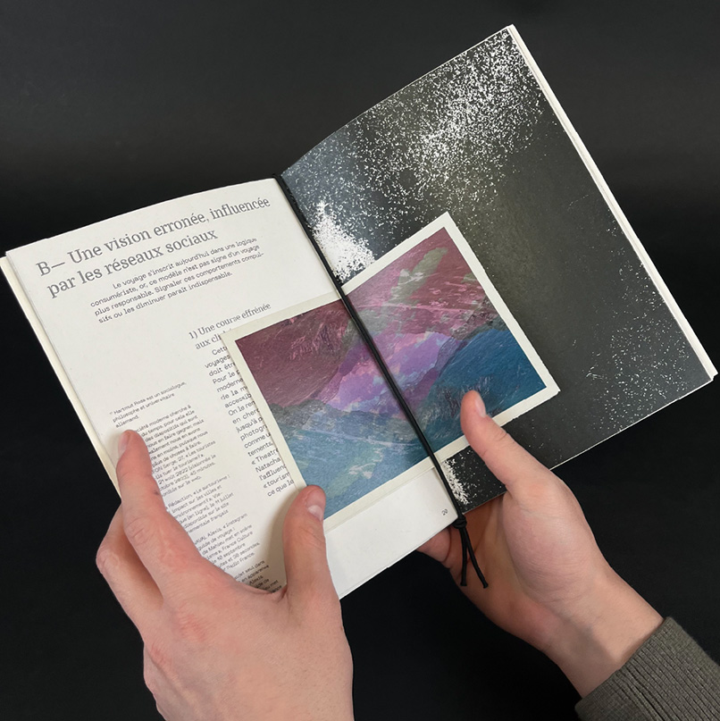
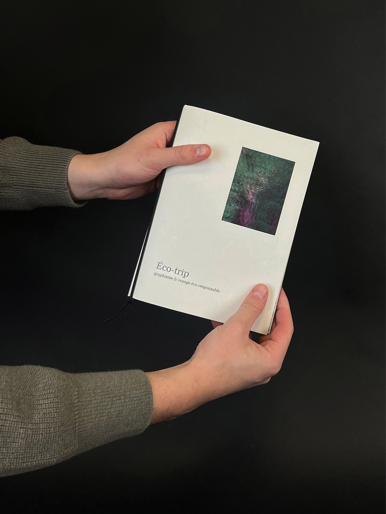
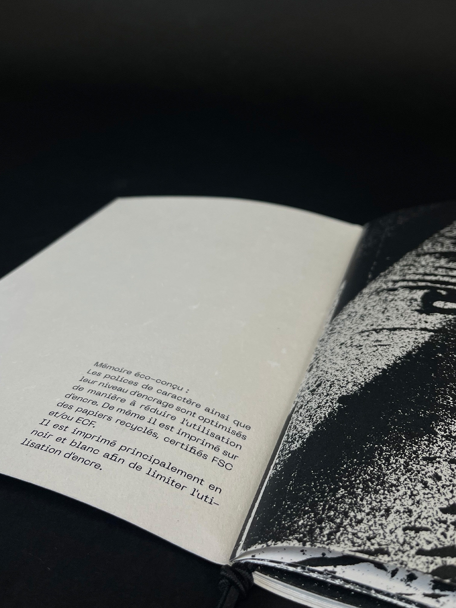
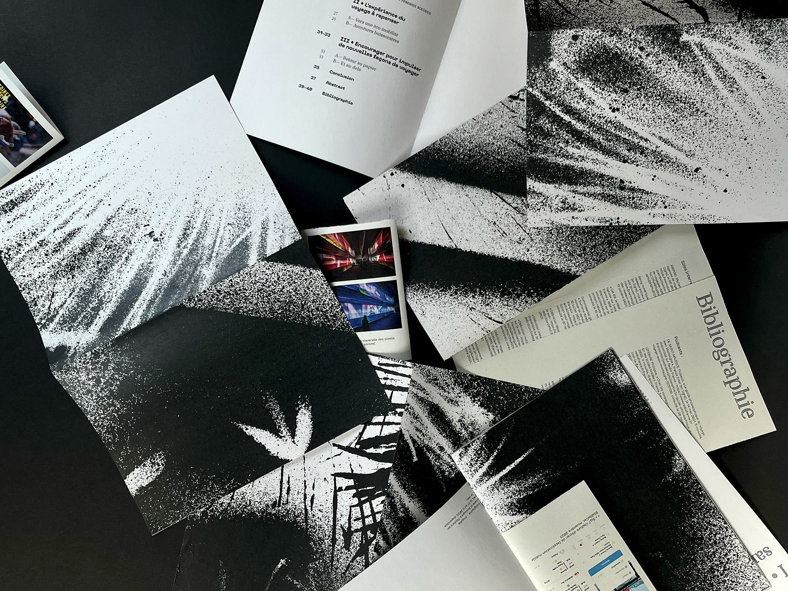

Une recherche sur le voyage écoresponsable et le design graphique : comment le design graphique peut-il encourager l’adoption de pratiques de voyage plus respectueuses de l’environnement ? J’interroge les pratiques de voyage contemporaines et leurs effets négatifs, ainsi que les possibilités existantes pour voyager de manière plus durable. Enfin, j’aborde des pratiques de voyage alternatives. La mise en page de cette recherche explore une lecture plurielle, conçue comme une ode au voyage. Grâce à un système d'abstraction du paysage, ce mémoire dépasse l'objet éditorial fini : il s'appréhende comme un livre ou se déploie dans l'espace. Au recto, des fragments d'images s'assemblent et laissent au lecteur le soin de recomposer son propre paysage.




